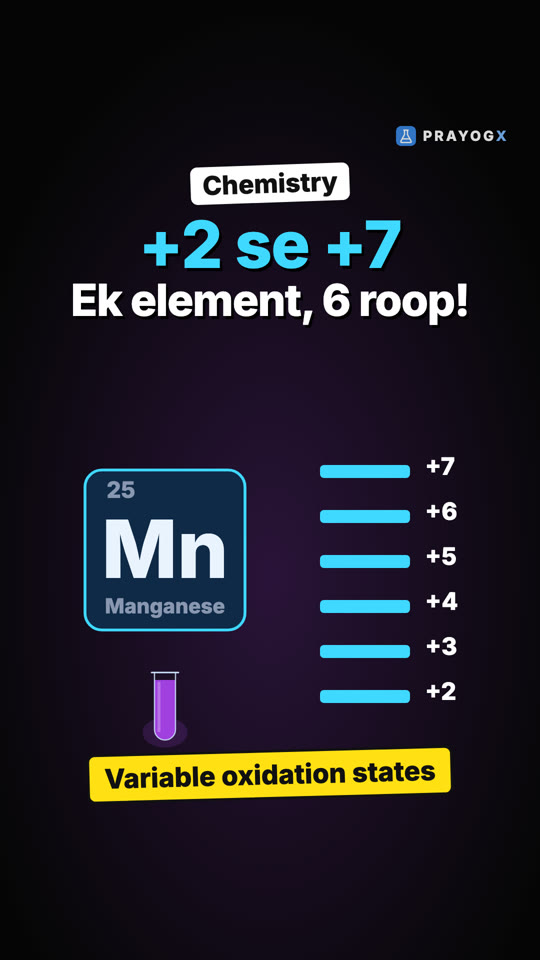
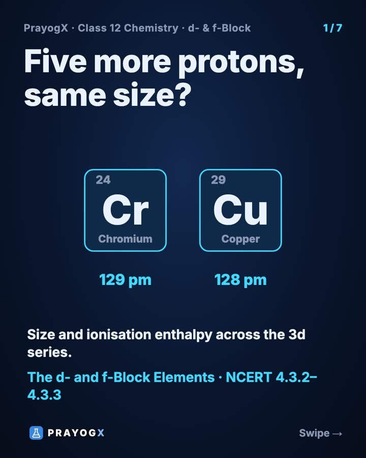
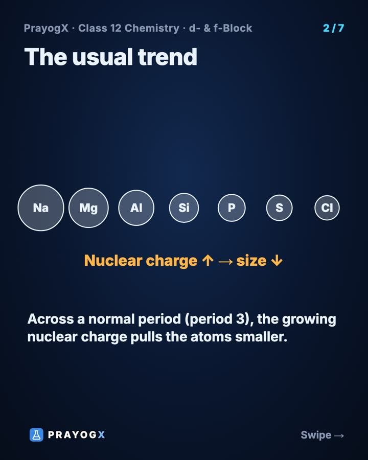
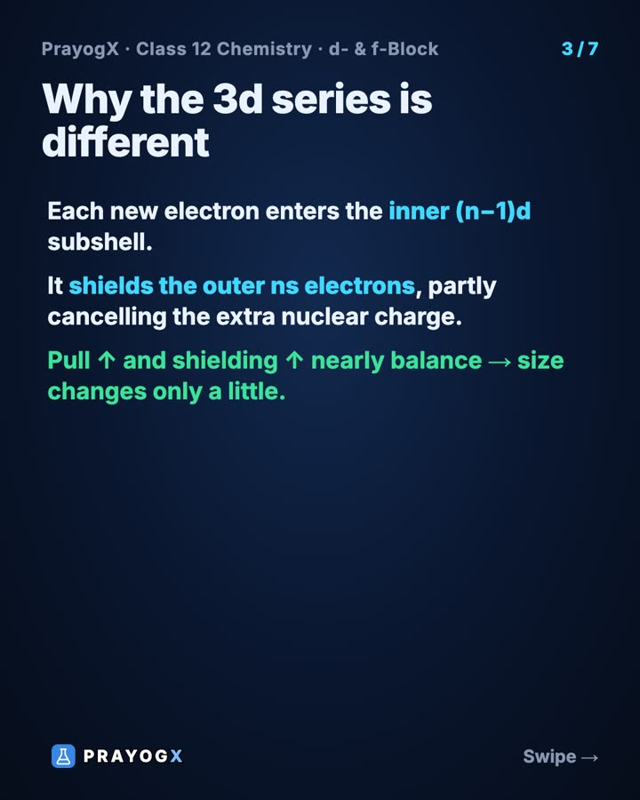
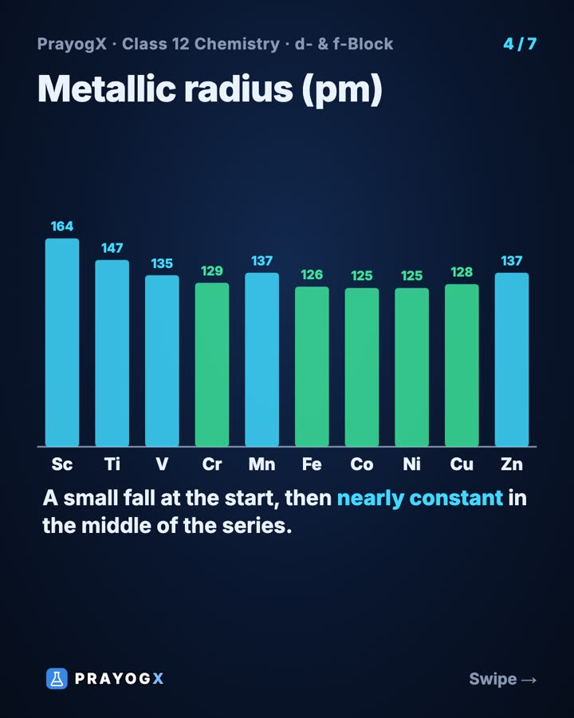
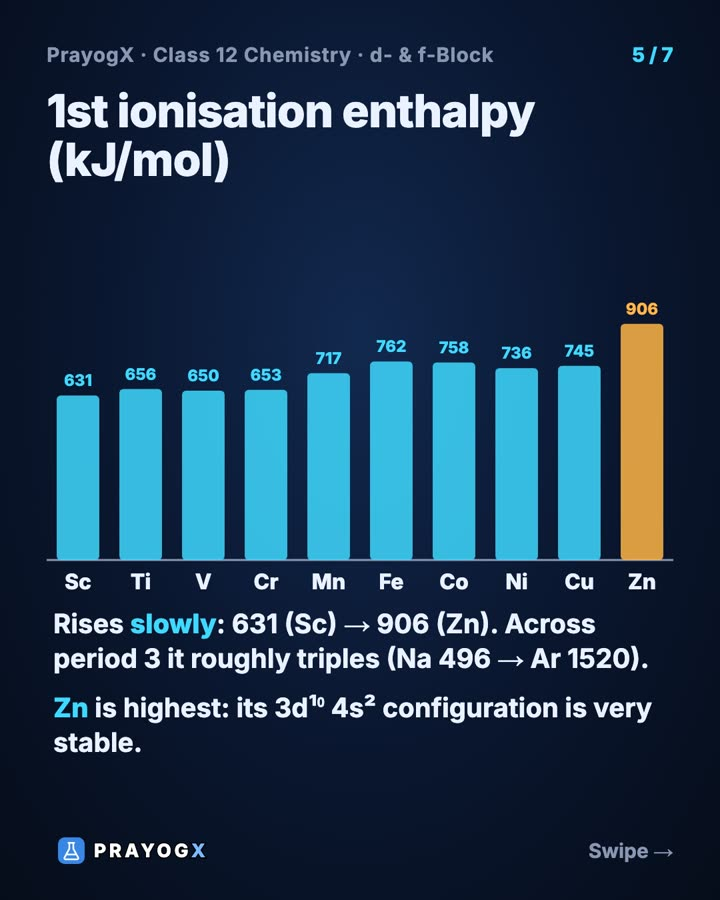
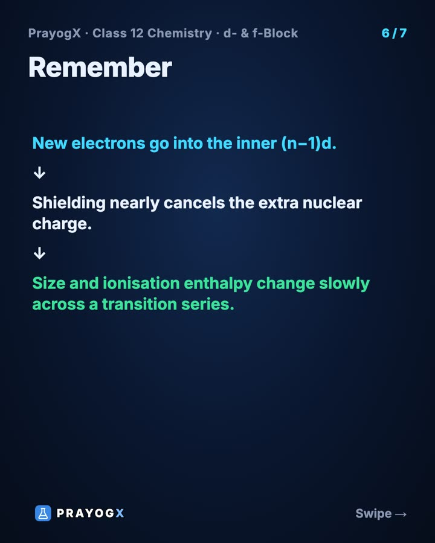
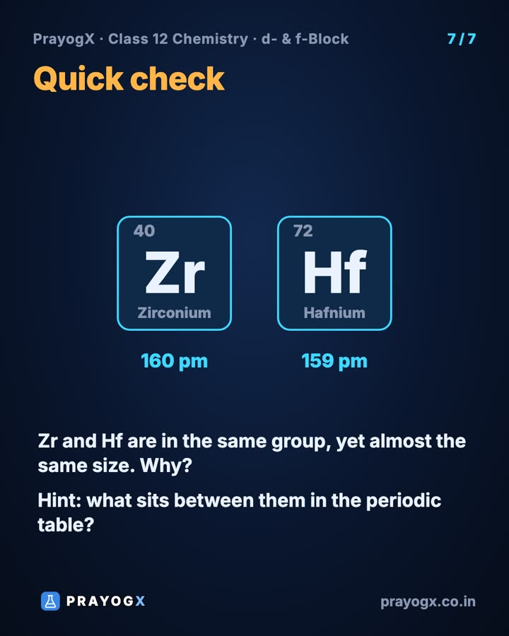
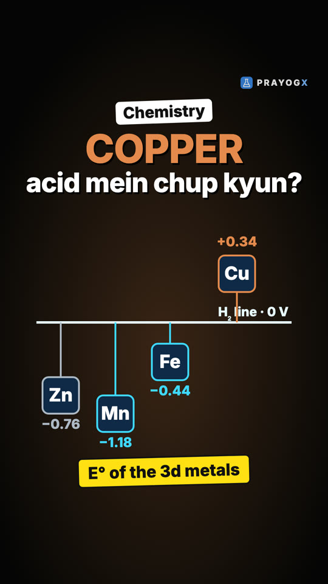

Five More Protons, Same Size: Radius and Ionisation Enthalpy across the 3d Series
Video not playing? YouTube
Across the 3d series each new electron enters the inner (n−1)d subshell and shields the outer 4s electrons, nearly cancelling the extra nuclear charge. So atomic radii change only slightly and the first ionisation enthalpy rises slowly (631 → 906 kJ/mol), unlike across a normal period.
Download the short notesPDF, 175 KB · solved examples, practice set and answer key Download the memory cards
PDF, 856 KB · 7 cards: the whole topic at a glance, for quick revision Download the workbook
PDF, 185 KB · fill in the blanks, true/false, assertion-reason, MCQ, numericals, short answer, match the columns; detailed solutions at the end Up next in this chapter

One Element, Six Oxidation States: Why Transition Metals VaryThe ns and (n−1)d electrons of a transition metal are close in energy, so both can take part in bonding. Manganese (3d⁵ 4s²) shows every state from +2 to +7; the most states occur in the middle of the series, Sc shows only +3 and Zn only +2, and the states change in steps of one.ChemistryKey points
- Across a transition series the new electron enters the inner (n−1)d subshell and shields the outer ns electrons.
- The extra nuclear pull and the extra shielding nearly balance: radii change only slightly, nearly constant in the middle.
- First ionisation enthalpy rises slowly: 631 (Sc) → 906 (Zn) kJ/mol, versus about three times across period 3.
- Zn has the highest IE (stable 3d¹⁰ 4s²); 4d and 5d radii are almost equal (lanthanoid contraction).
The data (3d series)
| Sc | Ti | V | Cr | Mn | Fe | Co | Ni | Cu | Zn | |
|---|---|---|---|---|---|---|---|---|---|---|
| Metallic radius / pm | 164 | 147 | 135 | 129 | 137 | 126 | 125 | 125 | 128 | 137 |
| 1st IE / kJ mol⁻¹ | 631 | 656 | 650 | 653 | 717 | 762 | 758 | 736 | 745 | 906 |
Why the change is small
The nuclear charge rises by one at each step, but each added electron goes into the inner 3d subshell. It partly shields the outer 4s electrons from the added charge, so the effective pull on them grows only a little.
Across period 3 there is no such inner shielding: the first IE climbs from 496 (Na) to 1520 kJ/mol (Ar).
Memory cards
Swipe through the 7 cards to revise this topic in a minute.







PDF, 856 KB · 7 cards: the whole topic at a glance, for quick revision
Quick quiz
5 questions. Choose an answer for each, then submit to see your score and the explanations.
More from The d- and f-Block Elements
 Why Transition Metals Have High Melting PointsIn transition metals the (n−1)d electrons join the ns electrons in metallic bonding, so the bonds are strong and the metals are hard with high melting points. Across the 3d series melting points peak near the middle (Mn is an exception) and fall to zinc (d¹⁰).Chemistry
Why Transition Metals Have High Melting PointsIn transition metals the (n−1)d electrons join the ns electrons in metallic bonding, so the bonds are strong and the metals are hard with high melting points. Across the 3d series melting points peak near the middle (Mn is an exception) and fall to zinc (d¹⁰).Chemistry d-Block Configurations: Why Chromium and Copper Break the RuleThe d-block's general configuration is (n−1)d¹⁻¹⁰ ns¹⁻², with 4s filling before 3d. Chromium (3d⁵4s¹) and copper (3d¹⁰4s¹) move one 4s electron into 3d, because 3d and 4s are very close in energy and half-filled and full d sets are extra stable.Chemistry
d-Block Configurations: Why Chromium and Copper Break the RuleThe d-block's general configuration is (n−1)d¹⁻¹⁰ ns¹⁻², with 4s filling before 3d. Chromium (3d⁵4s¹) and copper (3d¹⁰4s¹) move one 4s electron into 3d, because 3d and 4s are very close in energy and half-filled and full d sets are extra stable.Chemistry Zinc Is in the d-Block, So Why Is It Not a Transition Metal?A transition element has an incompletely filled d subshell in its atom or in a common ion. Iron (3d⁶) passes; copper (3d¹⁰ atom) passes through Cu²⁺ (3d⁹); zinc stays 3d¹⁰ even as Zn²⁺, so Zn, Cd and Hg are d-block but not transition metals.Chemistry
Zinc Is in the d-Block, So Why Is It Not a Transition Metal?A transition element has an incompletely filled d subshell in its atom or in a common ion. Iron (3d⁶) passes; copper (3d¹⁰ atom) passes through Cu²⁺ (3d⁹); zinc stays 3d¹⁰ even as Zn²⁺, so Zn, Cd and Hg are d-block but not transition metals.Chemistry The d- and f-Block Elements: Chapter IntroductionIron bridges, copper wires and bright blue, purple and orange solutions all come from one part of the periodic table. The d-block (groups 3–12) fills d orbitals; the f-block (two rows below) fills f orbitals. Variable oxidation states, colour, magnetism and catalysis make them special.Chemistry
The d- and f-Block Elements: Chapter IntroductionIron bridges, copper wires and bright blue, purple and orange solutions all come from one part of the periodic table. The d-block (groups 3–12) fills d orbitals; the f-block (two rows below) fills f orbitals. Variable oxidation states, colour, magnetism and catalysis make them special.Chemistry
Zinc Fizzes, Copper Stays Silent: Electrode Potentials of the 3d MetalsCopper is the only 3d metal with a positive E°(M²⁺/M) (+0.34 V), so it gives no H₂ with dilute acids. Turning Cu(s) into Cu²⁺(aq) costs more (atomisation + two ionisations) than hydration pays back: 921 against zinc's 711 kJ/mol. Stable d⁵ and d¹⁰ bend the trend: Mn and Zn dip, Mn³⁺ is a strong oxidant, Fe³⁺ is stable.Chemistry